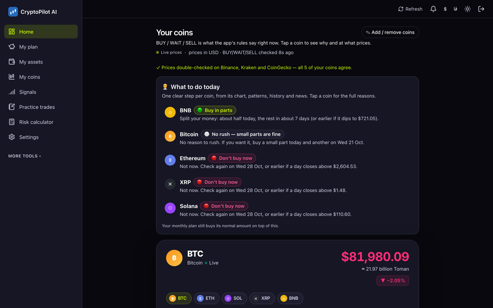
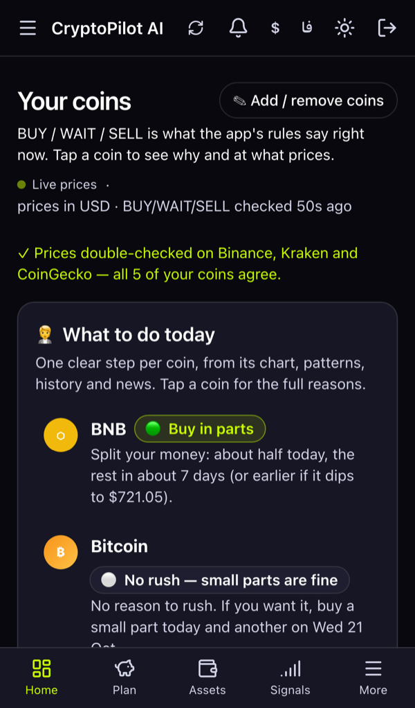
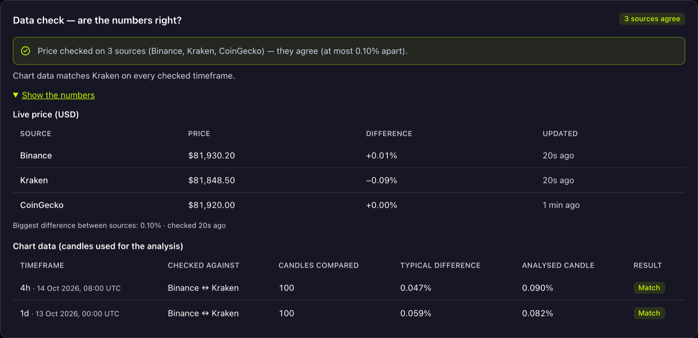
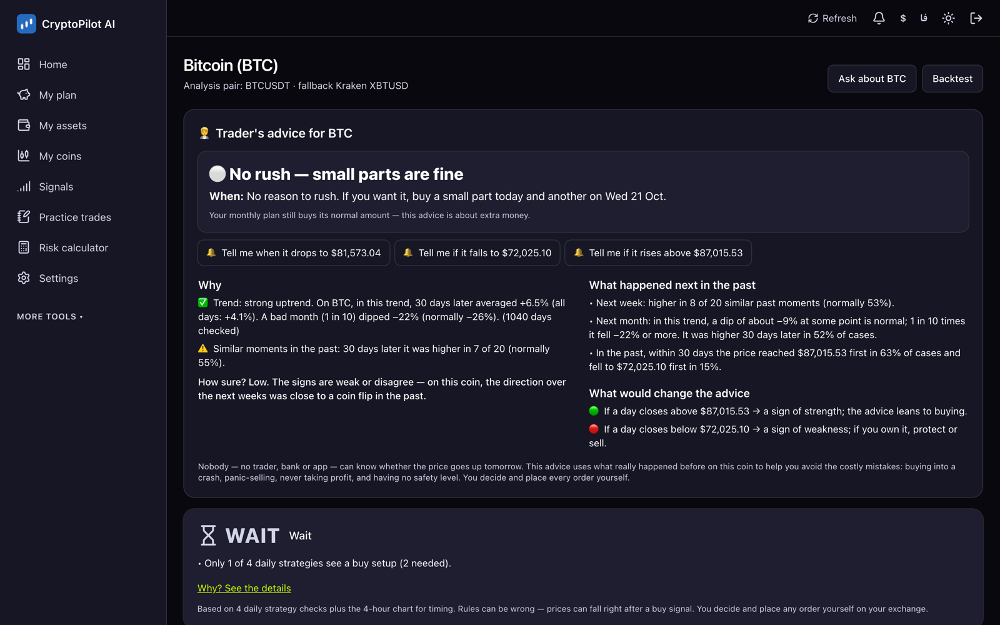

One clear answer per coin: BUY, WAIT or SELL.
CryptoPilot watches real market data, checks every price on three independent sources, runs transparent written rules and explains the result in plain words. It never trades — no wallet, no keys, no orders. You decide.
Self-hosted: your coins, plans and settings stay on your own computer or server.


Live right now: three sources, one price
This box asks Binance, Kraken and CoinGecko for today's prices, straight from your browser — the same check the app runs every 10 minutes before it trusts a number.
| Coin | Binance | Kraken | CoinGecko | Biggest difference | Result |
|---|
Real public prices in US dollars. Within 1% = agree · up to 3% = small difference · more = the app gives no signal until the sources agree again. Not investment advice.
Made for people who are not professional traders
Every answer comes with its reasons, the price where the idea is wrong, and what happened in similar moments before. No hype, no made-up numbers.
Every number is checked twice
One exchange can be wrong: a bad trade, a stuck feed, a coin that stopped trading. So CryptoPilot never trusts a single source.

A tour of the app
Real screenshots with real market data from a demo account.

From raw prices to one plain answer
A background worker repeats this every 5 minutes. Only finished candles are analysed, so a signal never changes after the fact.
Your own copy in a few minutes
CryptoPilot is a full web app with a database and a background worker, so it runs on your computer or a small server — not on a static website.
With Docker (easiest)
git clone https://github.com/sobhanizd/Trade.git cd Trade cp .env.example .env # set SESSION_SECRET and POSTGRES_PASSWORD in .env docker compose up -d --build docker compose run --rm worker \ npx tsx scripts/create-user.ts --username alex # open http://localhost:3000
With Node.js + PostgreSQL
git clone https://github.com/sobhanizd/Trade.git cd Trade && npm install cp .env.example .env # DATABASE_URL, SESSION_SECRET npx prisma migrate deploy && npm run db:seed npm run user:create -- --username alex npm run build && npm start # web app npm run worker # 2nd terminal
It never trades — on purpose
No wallet connection, no seed phrases, no exchange API keys and no order buttons. CryptoPilot is a decision-support tool: it explains, you decide and you place every order yourself. Nothing here is financial advice and no result is guaranteed — crypto prices can fall a lot.